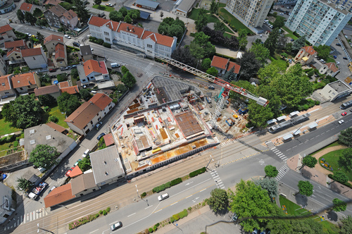
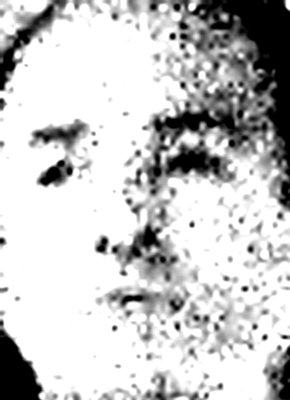
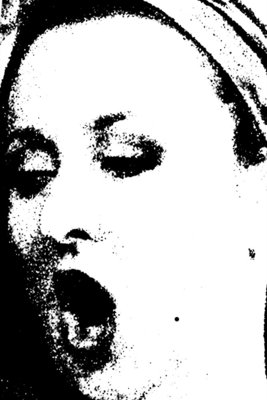
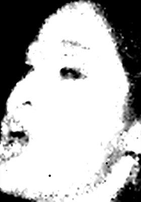
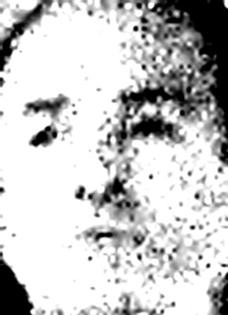
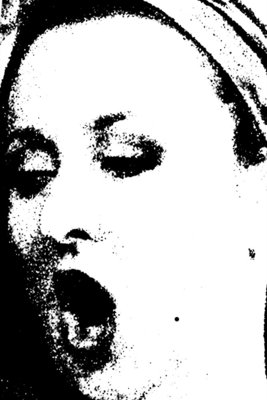
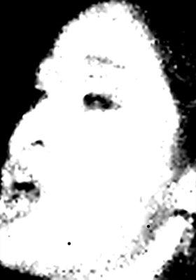

Fontaine des musiciens « Enfants »
Création sonore d’Anne-Julie Rollet et Julien Mandel : une préfiguration artistique à trois voix (plasticienne Suzanne Stern) qui accompagne la construction de « la Source ».

Visuels « Fontaine des musiciens » (Suzanne Stern)
Ce projet se veut simple et ambitieux : aller à la rencontre des musiciens de Fontaine, amateurs et professionnels, du commencement des travaux jusqu’à la réalisation du bâtiment, enregistrer, questionner les pratiques, travailler les traces passées et à venir.
C’est une tentative de « préfiguration artistique » d’un futur lieu, rêvé, imaginé…
Ces visages du passé, du présent, questionnent le regardant dans un affichage composé d’un avant-spectacle.
Qui cherche-t’on dans ces affichages ?
Qui va faire vivre et vibrer cet espace et ces espaces imaginaires à créer ?
 




